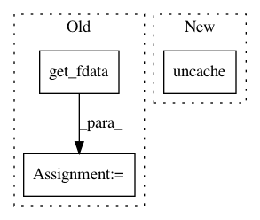

e4a36f3215735f8c351beb8f27edeb02eabb121f,pynets/dmri/track.py,,prep_tissues,#Any#Any#Any#Any#Any#Any#,49
Before Change
gm_mask = nib.load(gm_in_dwi)
gm_mask_data = gm_mask.get_fdata()
wm_mask = nib.load(wm_in_dwi)
wm_mask_data = wm_mask.get_fdata()
if tiss_class == "act":
vent_csf_in_dwi = nib.load(vent_csf_in_dwi)
vent_csf_in_dwi_data = vent_csf_in_dwi.get_fdata()
background = np.ones(mask_img.shape)
After Change
del gm_mask_data
del wm_mask_data
del vent_csf_in_dwi_data
mask_img.uncache()
return tiss_classifier
In pattern: SUPERPATTERN
Frequency: 3
Non-data size: 3
Instances
Project Name: dPys/PyNets
Commit Name: e4a36f3215735f8c351beb8f27edeb02eabb121f
Time: 2019-11-04
Author: dpisner@utexas.edu
File Name: pynets/dmri/track.py
Class Name:
Method Name: prep_tissues
Project Name: dPys/PyNets
Commit Name: bd78eb53776c15656943adcfbd4e72a7fb46dd6f
Time: 2019-12-25
Author: dpisner@utexas.edu
File Name: pynets/core/nodemaker.py
Class Name:
Method Name: get_node_membership
Project Name: dPys/PyNets
Commit Name: e4a36f3215735f8c351beb8f27edeb02eabb121f
Time: 2019-11-04
Author: dpisner@utexas.edu
File Name: pynets/dmri/track.py
Class Name:
Method Name: run_track